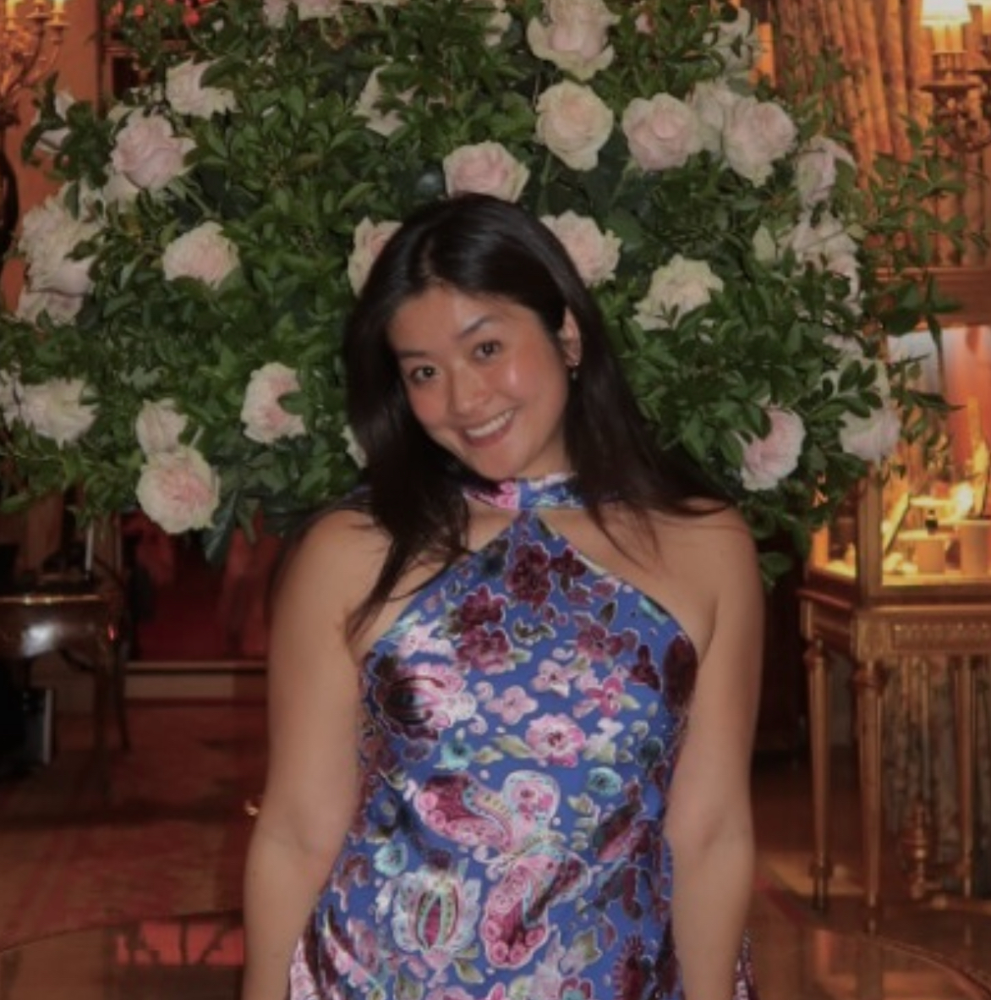

Liz Tan
Machine Learning PhD Student
About

I am a first year PhD student at the Department of Applied Mathematics and Theoretical Physics, University of Cambridge.
I work in Machine Learning, primarily the intersection between Symbolic Regression and Deep Models.
I am supervised by Dr. Miles Cranmer.
Previously, I did one year in Finance at JPMorgan, London. And did my undergraduate in Physics at Imperial College London.
I love reading, going to the gym, and walking. I am Singaporean.
Email: eszt2 at cam dot ac dot uk
Projects & Publications
- SymTorch: Symbolic Distillation of Neural Networks (preprint, 2026); ICLR 2026 CAO workshop.
Writings*
- (12 May 2026): The web is dead! We are packing up and leaving, baby! Don't get left behind. #opinion#aisafety
*by principle, I do not use LLMs to write any opinion pieces
Misc.
Last updated: 2026-05-14